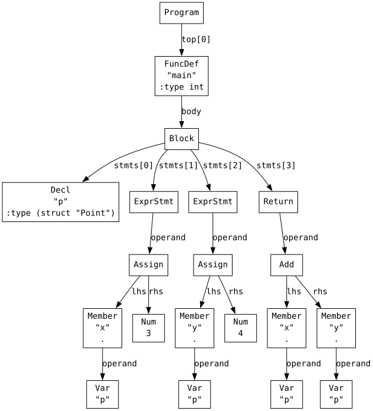
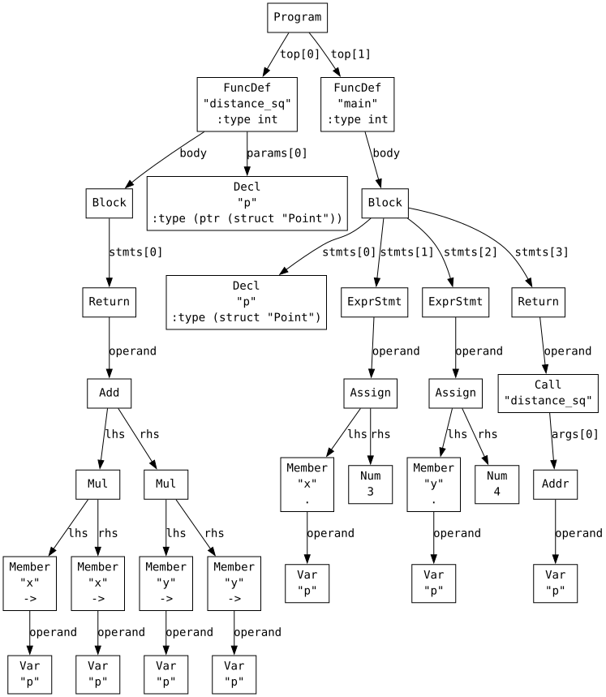
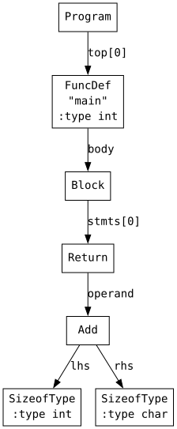
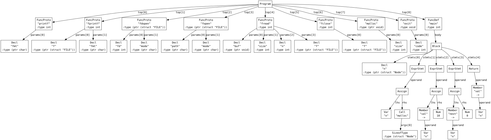
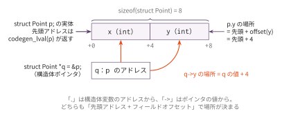
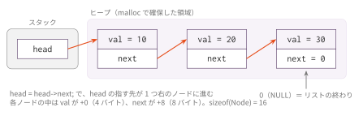

コマ12: 構造体とヒープ（struct / . / -> / sizeof / malloc / 連結リスト）
今日のゴール
struct タグ { ... }; の定義、構造体変数、.、-> を実装する。
続けて sizeof(struct タグ) で求めたサイズを malloc に渡し、
ヒープ上に確保した構造体をポインタでつないで連結リストを動かす。
コマ9までに、型サイズとポインタ演算を扱えるようになった。この回では、複数のフィールドを まとめた構造体を導入し、その構造体をスタック上だけでなくヒープ上にも置けるようにする。
struct Point { int x; int y; }; // スタック上に置く例
struct Node { int val; struct Node *next; }; // ヒープ上に置く例struct Point は、x と y という2つのフィールドを持つ型である。
struct Node は、自分と同じ型へのポインタ next を持つ。
このような構造体を自己参照構造体と呼ぶ。
この回で扱う範囲
対象にする機能は次の通り。
| 種類 | 例 | この回で新しい点 |
|---|---|---|
| struct 定義 | struct Point { int x; int y; }; |
フィールドのオフセットとサイズを管理する |
| 直接メンバアクセス | p.x |
構造体変数のアドレス + オフセット |
| ポインタ経由メンバアクセス | p->x |
ポインタの値 + オフセット |
| 構造体ポインタ引数 | int f(struct Point *p) |
構造体は値ではなくポインタで渡す |
sizeof(struct タグ) |
sizeof(struct Node) |
構造体のサイズを引ける（sizeof(int) 等はコマ9） |
malloc で構造体を確保 |
malloc(sizeof(struct Node)) |
確保先を構造体として扱う（malloc 呼び出し自体はコマ9） |
void * の暗黙変換 |
n = malloc(...);（n は struct Node *） |
void * と T * を行き来できる |
| 自己参照構造体 | struct Node *next |
自分自身へのポインタを持つ構造体 |
NULL |
n->next = NULL; |
終端を表すポインタ値 |
| 連結リスト | head = head->next |
上を組み合わせたデータ構造 |
言語仕様どおり、構造体のフィールドは int、char、ポインタに限られる。
扱わない範囲（struct 値の入れ子、構造体代入、グローバル構造体変数）は「注意」節にまとめた。
malloc 自体も自作しない。lib.h の宣言を使い、リンク時に libc の malloc を呼び出す。
この回までの言語仕様（EBNF）
この回までに書けるプログラムの文法を、累積の形でまとめる。
記法と最終形の全体像は
language_spec.md の「形式文法（EBNF）」を参照。
この回で書ける #include は提供物の lib.h の取込みだけで、
自作ヘッダと入れ子の取込み、#define はコマ14 で扱う。
include_dir ::= '#' 'include' '"' FILENAME '"' NEWLINE /* #define はコマ14 */
stars ::= '*' { '*' }
scalar_type ::= 'int' [ stars ]
| 'char' [ stars ]
| 'void' stars
| 'struct' IDENT stars
obj_type ::= scalar_type
| 'struct' IDENT
ret_type ::= scalar_type
| 'void'
type_name ::= obj_type
program ::= external_decl { external_decl }
external_decl ::= struct_decl
| func_proto
| func_def /* グローバル変数はコマ13 */
struct_decl ::= 'struct' IDENT '{' field_decl { field_decl } '}' ';'
| 'struct' IDENT ';'
field_decl ::= scalar_type IDENT ';'
var_decl ::= obj_type IDENT ';'
param ::= scalar_type IDENT
param_list ::= param { ',' param }
func_proto ::= ret_type IDENT '(' [ param_list [ ',' '...' ] ] ')' ';'
func_def ::= ret_type IDENT '(' [ param_list ] ')' func_body
func_body ::= '{' { var_decl } { stmt } '}'
stmt ::= expr_stmt
| block
| if_stmt
| while_stmt
| for_stmt
| 'break' ';'
| 'continue' ';'
| 'return' [ expr ] ';'
expr_stmt ::= [ expr ] ';'
block ::= '{' { stmt } '}'
if_stmt ::= 'if' '(' expr ')' stmt [ 'else' stmt ]
while_stmt ::= 'while' '(' expr ')' stmt
for_stmt ::= 'for' '(' [ expr ] ';' [ expr ] ';' [ expr ] ')' stmt
expr ::= assign_expr
assign_expr ::= unary_expr '=' assign_expr /* 右結合 */
| cond_expr
cond_expr ::= binary_expr [ '?' expr ':' cond_expr ] /* 右結合 */
binary_expr ::= unary_expr { bin_op unary_expr }
bin_op ::= '*' | '/' | '%' /* 論理 && || はコマ13 */
| '+' | '-'
| '<' | '>' | '<=' | '>='
| '==' | '!='
unary_expr ::= postfix_expr
| '-' unary_expr
| '*' unary_expr
| '&' unary_expr
| '++' unary_expr
| '--' unary_expr
| 'sizeof' '(' type_name ')'
postfix_expr ::= primary_expr { postfix_suffix }
postfix_suffix ::= '[' expr ']'
| '.' IDENT
| '->' IDENT
primary_expr ::= INT_LITERAL
| CHAR_LITERAL
| STRING_LITERAL
| IDENT '(' [ arg_list ] ')'
| IDENT
| '(' expr ')'
arg_list ::= assign_expr { ',' assign_expr }この回までの二項演算子の優先順位（高い順）:
| 優先順位 | 演算子 | 結合 |
|---|---|---|
| 1（高） | * / % |
左 |
| 2 | + - |
左 |
| 3 | < > <= >= |
左 |
| 4 | == != |
左 |
表の読み方はコマ1の「木の形は規則で決まっている」と
language_spec.md の「演算子」を参照。
obj_type にだけ 'struct' IDENT（* なし）があり、scalar_type には無い。
この構成により、struct 値の引数・戻り値・フィールドは構文の段階で書けなくなっている。
struct 定義はファイルスコープのみで、タグ必須、フィールドは1個以上、初期化子は存在しない。
字句トークンの定義はどの回でも同じであるため、ここでは繰り返さない。
language_spec.md の「字句トークン」を参照。
AST を確認する: . と ->
まず、メンバアクセスがどのような AST になるか確認する。
python3 scaffold/parse_viewer.py sessions/12_struct_malloc_list/tests/dot_access.cこのプログラムの内容は次の通り。
struct Point {
int x;
int y;
};
int main() {
struct Point p;
p.x = 3;
p.y = 4;
return p.x + p.y;
}実行すると、次のようなS式が表示される。
(program
(funcdef "main" :type int (params)
(block
(decl "p" :type (struct "Point"))
(exprstmt
(assign (member "." "x" (var "p")) (num 3)))
(exprstmt
(assign (member "." "y" (var "p")) (num 4)))
(return
(add
(member "." "x" (var "p"))
(member "." "y" (var "p")))))))
p.x は AST 上では (member "." "x" (var "p")) になる。
次に、構造体ポインタを使う arrow_access.c を見る。
python3 scaffold/parse_viewer.py sessions/12_struct_malloc_list/tests/arrow_access.cint distance_sq(struct Point *p) {
return p->x * p->x + p->y * p->y;
}この関数の部分は次のS式になる。
(funcdef "distance_sq" :type int
(params
(param "p" :type (ptr (struct "Point"))))
(block
(return
(add
(mul (member "->" "x" (var "p")) (member "->" "x" (var "p")))
(mul (member "->" "y" (var "p")) (member "->" "y" (var "p")))))))
p->x は AST 上では (member "->" "x" (var "p")) になる。
意味としては (*p).x と考えればよい。
. と -> は同じ member ノードで、1つ目の要素が違うだけである。
AST を確認する: sizeof と malloc
sizeof の AST はコマ9 で見たものと同じである。
python3 scaffold/parse_viewer.py sessions/12_struct_malloc_list/tests/sizeof_test.cint main() {
return sizeof(int) + sizeof(char);
}(program
(funcdef "main" :type int (params)
(block
(return
(add (sizeof-type int) (sizeof-type char))))))
sizeof(int) は (sizeof-type int)、sizeof(char) は (sizeof-type char) になる。
どちらも実行時に計算する必要はなく、翻訳時に型サイズを見て定数を出せばよい。
次に、malloc と struct Node *next を含む list_min.c を見る。
python3 scaffold/parse_viewer.py sessions/12_struct_malloc_list/tests/list_min.c#include "lib.h"
struct Node {
int val;
struct Node *next;
};
int main() {
struct Node *n;
n = malloc(sizeof(struct Node));
n->val = 10;
n->next = NULL;
return n->val;
}先頭には lib.h の関数プロトタイプが並び（#include がファイル結合であることが
そのまま見える）、その後に main が続く。main の部分は次のようになる。
(funcdef "main" :type int (params)
(block
(decl "n" :type (ptr (struct "Node")))
(exprstmt
(assign (var "n")
(call "malloc" (args (sizeof-type (struct "Node"))))))
(exprstmt
(assign (member "->" "val" (var "n")) (num 10)))
(exprstmt
(assign (member "->" "next" (var "n")) (num 0)))
(return
(member "->" "val" (var "n"))))))
見どころは3つある。
sizeof(struct Node)は(sizeof-type (struct "Node"))で、sizeof(int)と同じノードである。malloc(...)はただのcallである。関数呼び出しはコマ6 で作ったものがそのまま働く。NULLは(num 0)になっている。理由は後の「NULL」節で述べる。
lib.h の宣言は void *malloc(int size); である。void * は任意の T * へ暗黙変換されるので、
そのまま struct Node *n に代入できる。逆向き（T * から void *）も同じで、
void *v; のような変数や int f(void *p) のような仮引数も書ける
（void 単独の変数は書けない。* を伴う形だけである）。
この言語にキャスト (type)expr は無いので、ポインタの型を変える手段はこの暗黙変換だけである。
どちらもサイズ 8 のポインタなので、変換のための命令は出ない。
構造体のメモリレイアウト
構造体のサイズとフィールドのオフセットは、フィールドの並びから決める。 この講義では、各フィールドをその型サイズに応じた自然な境界に揃え、 構造体全体のサイズは最大フィールドの境界の倍数へ切り上げる。
struct Point は int x; int y; を持つ。int は4バイトなので、余白は入らない。
| フィールド | 型 | オフセット | サイズ |
|---|---|---|---|
x |
int |
0 | 4 |
y |
int |
4 | 4 |
struct Point 全体のサイズは8バイトである。

図の q は &p を代入した struct Point *q である（distance_sq(&p) の仮引数も同じ状態になる）。
. は構造体変数のアドレスから、-> はポインタの値から、どちらも「+ フィールドオフセット」で場所が決まる。
一方 struct Node は int val; struct Node *next; を持つ。
ポインタは8バイト境界に置くため、val の後に4バイトの余白（パディング）が入る。
| フィールド | 型 | オフセット | サイズ |
|---|---|---|---|
val |
int |
0 | 4 |
| （余白） | — | 4 | 4 |
next |
struct Node * |
8 | 8 |
sizeof(struct Node) は 16 であって、4 + 8 = 12 ではない。
この差はあとで malloc に渡すサイズに効いてくる。
next は struct Node そのものではなく、struct Node へのポインタである。
ポインタのサイズは中身を知らなくても8バイトで確定するので、
定義の途中でも自分自身へのポインタを持てる。自己参照構造体が書けるのはこのためである。
構造体型の名前は常に struct タグ名 の形だけである。
そのため、構造体情報表のキーも "struct Node" の形で持てば、
型文字列（ty_str）をそのままキーとして使える。
struct 定義を読む
Parser は struct Point { ... }; のフィールド一覧を AST には残さない。
そのため、この回ではソース文字列を走査して構造体情報を集める。
# スケルトンがあらかじめ source から構造体情報を収集し、
# self._struct_defs としてコンストラクタに渡す設計self._struct_defs は "struct Point" の形の型名をキーとする辞書である。
たとえば struct Point のエントリは次の形をとる。
{
"size": 8,
"align": 4,
"fields": {
"x": (0, "int"), # (オフセット, ty_str)
"y": (4, "int"),
},
}タプルの中身を直接取り出す必要はない。スケルトンは次の2つを提供している。
| 提供済み | 役割 |
|---|---|
field_offset(struct_ty, name, struct_defs, line) |
フィールドのオフセットを返す |
field_ty(struct_ty, name, struct_defs, line) |
フィールドの ty_str を返す |
情報を集めるのはクラスメソッド parse_struct_defs(prog) で、これもスケルトンにある。
Parser が構文解析の結果として残す struct 定義（prog.struct_defs）から読み取るので、
フィールド間のコメントや、文字列・コメント内の struct タグ { 風のテキストに惑わされない。
size_of_ty_str に引数が増える
コマ8 の size_of_ty_str(ty) は int / char / ポインタしか知らなかった。
struct Point のサイズは定義を見ないと分からないので、この回で第2引数が増える。
size_of_ty_str(ty_str) -> int # コマ8〜コマ11
size_of_ty_str(ty_str, struct_defs=None) -> int # この回以降struct_defs は省略でき、省略した場合の結果はコマ8 と同じである。
そのため、コマ11 までに書いた呼び出しはそのまま動く。
ただし struct のサイズが要る場所では self._struct_defs を必ず渡す。
渡し忘れるとエラーにならないまま結果だけがずれる。
self.size_of_ty_str("struct Point", self._struct_defs) # 8
self.size_of_ty_str("struct Point") # 4（渡し忘れ）alloc_local / _scale_index / _load_ty / _store_ty / codegen_SizeofType は、
この引数を渡す形に直す必要がある。以降のコマ13〜コマ15 でもこの2引数の形を使う。
. と -> のコード生成
'Member' ノードの lvalue を作るのは codegen_lval_Member(node) ハンドラである
（codegen_lval() のディスパッチはスケルトンに書かれているので、書くのはハンドラだけでよい）。
p->x は (*p).x と同じ意味なので、どちらもアドレス計算は同じ形になる。
address(p.x) = address(p) + offset(x) # . は p のアドレス
address(p->x) = value(p) + offset(x) # -> は p の値違うのは2点だけである。
ベースアドレスを codegen_lval で求めるか codegen で求めるか、
そして対象の構造体型名を左辺値型からそのまま取るか、
ポインタ型から elem_ty_str で1段はがすかである。
def codegen_lval_Member(self, node):
struct_ty = self._member_struct_type(node) # "struct Point"
if node.is_arrow:
self.codegen(node.operand) # -> はポインタの値
else:
self.codegen_lval(node.operand) # . は変数のアドレス
offset = self.field_offset(struct_ty, node.name, self._struct_defs, node.line)
self.emit(f" addi a0, a0, {offset}")構造体型名を求める部分はスケルトンで self._member_struct_type(node) に切り出してある。
中身は「. なら _type_of_lval(node.operand)、-> なら _type_of_expr(node.operand) を
elem_ty_str に通す」だけで、これも実装対象である。
sizeof のコード生成 — コマ9 からの差分
sizeof(型名) そのものはコマ9 で導入済みである。
AST ノードも (sizeof-type ...) のままで増えていないし、
「型情報からサイズを調べ、即値を a0 に入れる」という形もそこで決まっている。
この回で新しいのは、被演算子に struct タグ名 が来る場合だけである。
| 式 | サイズの求め方 | 導入回 |
|---|---|---|
sizeof(int)・sizeof(char)・sizeof(int *) |
型ごとに決まった値 | コマ9 |
sizeof(struct Node) |
構造体情報表 self._struct_defs から引く |
この回 |
違いは、構造体のサイズが型名だけでは決まらないことである。
フィールドの並びと境界合わせの余白まで見て初めてサイズが決まるので、
この回で作った構造体情報表を参照する必要がある。
そのため size_of_ty_str() に第2引数として self._struct_defs を渡す。
def codegen_SizeofType(self, node):
self.emit(f" li a0, {self.size_of_ty_str(node.ty_str, self._struct_defs)}")たとえば sizeof(struct Node) は、self._struct_defs["struct Node"]["size"] が16なら li a0, 16 を出す。
コマ9 と同じく、出るのは即値1命令だけで、実行時に型を調べる処理は生成されない。
sizeof の被演算子は型名だけである。sizeof 式（sizeof x のように式を書く形）は
言語仕様の対象外なので（language_spec.md の「除外」節）、スキャフォールドの AST にも
対応するノードは無い。これはコマ9 と同じで、この回でも変わらない。
malloc を呼び出すと何が起きるか
malloc は、指定されたバイト数ぶんのメモリ領域をヒープから確保し、
その先頭アドレスを返すライブラリ関数である。
n = malloc(sizeof(struct Node));コンパイラが行うことは、通常の関数呼び出しと同じである。
まず sizeof(struct Node) を a0 に計算し、それを第1引数として malloc を呼び出す。
戻り値も a0 に返る。この回で追加の実装は要らない。
返ってきた値は、構造体そのものではなく、確保されたメモリ領域の先頭アドレスである。
そのアドレスを struct Node *n に代入することで、以後その領域を struct Node として扱える。
n->val = 10;
n->next = NULL;重要なのは、malloc はメモリを確保するだけで、中身を初期化しないことである。
確保直後の n->val や n->next の値は未定義なので、使う前に自分で代入する必要がある。
実際の malloc の内部では、未使用のヒープ領域を管理し、要求されたサイズに合う領域を探して返す。
足りなければ OS から追加のメモリを取得する。ただし今回のコンパイラでは、その仕組みを実装しない。
コンパイラが担当するのは、引数を a0 に置き、呼び出し規約に従って libc の malloc を
呼び出すところまでである。本来必要な free による解放も、プログラムがすぐ終了する
小さな例だけを扱うこの回では実装範囲に含めない。
NULL — 「どこも指していない」ポインタ
n->next = NULL; の NULL は、この回で初めて使う名前である。
NULL は言語のキーワードではなく、lib.h の最後にある1行のマクロである。
#define NULL 0#include "lib.h"（コマ10）でこの定義が取り込まれ、
スキャフォールドの前処理が NULL を 0 に置き換えてから Lexer に渡す。
list_min.c のS式で n->next = NULL; が
(assign (member "->" "next" (var "n")) (num 0)) になっているのは、
Parser が見る時点ではすでに 0 になっているからである。
そのため、コンパイラ側に NULL のための処理は要らない。
NULL を書くために必要なのは #include "lib.h" だけである。
意味の上では、NULL は「どのオブジェクトも指していない」ことを表すポインタ値である。
アドレス 0 にはプログラムのデータが置かれないので、
「有効なアドレスではない」印として 0 を使える。
p = NULL; は「まだどこも指していない」、p != NULL は「有効なアドレスを持っている」
という意味になる。NULL のポインタを間接参照してはいけない（実行時にクラッシュする）。
連結リストでは、この規則がそのまま「終端に着いたら止まる」という走査の条件になる。
連結リストの走査
連結リストは、各ノードが次のノードへのポインタを持つ構造である。
int list_sum(struct Node *head) {
int sum;
sum = 0;
while (head != NULL) {
sum = sum + head->val;
head = head->next;
}
return sum;
}head != NULL は、まだ終端に着いていないこと、つまり head が指す先を読んでよいことを調べている
（前処理を通った後は head != 0 になる）。
head->val で現在のノードの値を読み、head = head->next で次のノードへ進む。
while (head != NULL && head->val > 0) とは書けない。
このスキャフォールドの && は両辺を必ず評価するため、
head が NULL のときに head->val を読んでクラッシュする。
NULL の判定と中身の判定は、上の例のように分けて書くこと
（短絡評価の実装は発展課題 S1 で扱う）。

head はスタック上のローカル変数だが、各ノードは malloc で確保したヒープ上にある。
head = head->next は、head の指す先を矢印1つぶん右のノードへ進める。
編集するファイル
mycc.py
importlib でコマ11 の Codegen11 を継承した Codegen12 に、以下の機能を追加する。
スケルトンにあらかじめ書かれているものは次の通りで、実装対象ではない。
| 提供済み | 役割 |
|---|---|
parse_struct_defs(prog) |
Parser が残した構造体定義（prog.struct_defs）からレイアウトを集める |
size_of_ty_str(ty, defs=None) / align_of_ty_str(ty) / is_struct_ty_str(ty, defs) |
サイズ・境界と struct 判定 |
field_offset(...) / field_ty(...) |
フィールドのオフセットと型 |
_type_of_expr() / _type_of_lval() / codegen_lval() / codegen() / collect_strings_expr() のディスパッチ |
'Member' と 'SizeofType' の分岐は既に書かれている。書くのは飛び先のハンドラだけである |
実装対象は、スケルトンの raise NotImplementedError が置かれている次の12個である。
| # | 実装対象 | 役割 |
|---|---|---|
| 1 | _member_struct_type(node) |
. と -> の違いを踏まえて対象の構造体型名を返す |
| 2 | alloc_local(name, ty_str) |
size_of_ty_str に self._struct_defs を渡し、struct のサイズで領域を確保する |
| 3 | _scale_index(elem_ty) |
同上。struct へのポインタの添字で要素サイズを正しく求める |
| 4 | _load_ty(ty_str) |
同上。加えて struct 型はロードせずアドレスのまま扱う（is_struct_ty_str で判定） |
| 5 | _store_ty(ty_str) |
同上。struct のサイズを引けるようにする |
| 6 | type_of_expr_Member(node) |
Member の型は左辺値型と同じ |
| 7 | type_of_lval_Member(node) |
_member_struct_type と field_ty でメンバの型を求める |
| 8 | codegen_lval_Member(node) |
ベースアドレス + field_offset |
| 9 | codegen_Member(node) |
左辺値アドレスを作り、メンバ型でロードする |
| 10 | collect_strings_expr_Member(node) |
Member の operand も文字列収集の対象にする |
| 11 | type_of_expr_SizeofType(node) |
sizeof(型名) の型は int |
| 12 | codegen_SizeofType(node) |
node.ty_str のサイズを求め、li a0, <size> を出力する |
2〜5 の4つは、コマ11 まで動いていたコードに self._struct_defs を足すだけの修正である。
ただし直し忘れに気づけるよう、スケルトンでは4つとも raise NotImplementedError を置き、
コマ11 版のコードは TODO コメントの中に残してある。
11・12 の2つを書けば malloc と自己参照構造体と連結リストが動く。
malloc 呼び出しはコマ6 の関数呼び出しが、-> は 1〜10 で書いた構造体処理が、
そのまま働くからである。
実装手順
- スケルトンの
importlib継承によりコマ11の Codegen クラスを引き継ぐ（あらかじめ書かれている） parse_struct_defs(prog)で構造体定義のレイアウトを求め、コンストラクタでself._struct_defsに渡す（あらかじめ書かれている）alloc_local()/_scale_index()/_load_ty()/_store_ty()のsize_of_ty_str呼び出しにself._struct_defsを渡す_load_ty()はstruct型のときロードせず、アドレスのまま扱う（is_struct_ty_strで判定）_member_struct_type(node)を実装する（.は_type_of_lval、->は_type_of_expr+elem_ty_str）type_of_lval_Member(node)とtype_of_expr_Member(node)を実装する（フィールドの型はfield_tyで引く）codegen_lval_Member(node)を実装する（ベースアドレスにfield_offsetを足す）codegen_Member(node)を実装する（codegen_lval_Memberのアドレスを_load_tyでロードする）collect_strings_expr_Member(node)を実装する（Memberの operand を走査する）dot_access.cを通し、続けてarrow_access.cを通すtype_of_expr_SizeofType(node)を実装する（'int'を返すだけでよい）codegen_SizeofType(node)を実装する（self.size_of_ty_str(node.ty_str, self._struct_defs)の値をli a0, <size>で出す。self._struct_defsを渡し忘れるとstructのサイズが 4 になる）sizeof_test.cを通す（sizeof(int) + sizeof(char)）malloc_struct.c/list_min.cを通す
（parse_struct_defs()は自己参照フィールドstruct Node *nextをそのまま扱える。ポインタは中身を知らなくてもサイズ 8 で確定するからである。malloc(sizeof(struct Node))はコマ6 の関数呼び出しがそのまま働くので、追加の実装は要らない。）list_sum.cまで通すvoid_ptr.cを通す
（void *と任意のT *の相互変換。void *の変数・仮引数も書ける。ポインタ同士なのでサイズは常に 8 で、変換のための命令は要らない。）sizeof_void_ptr.cを通す（sizeof(void *)も他のポインタ型と同じくサイズ 8 として求まる）
tests/
| ファイル | 内容 | 期待値 |
|---|---|---|
dot_access.c |
p.x, p.y の読み書き |
7 |
arrow_access.c |
struct Point *p に対する p->x |
25 |
sizeof_test.c |
sizeof(int) + sizeof(char) |
5 |
malloc_struct.c |
malloc(sizeof(struct Box)) と -> |
17 |
list_min.c |
malloc した1ノードを -> で読む最小形 |
10 |
list_sum.c |
struct Node の連結リスト走査 |
60 |
void_ptr.c |
void * と T * のキャストなしの相互変換 |
47 |
sizeof_void_ptr.c |
sizeof(void *) の翻訳時定数（void * はこの回で導入） |
8 |
テスト
python3 scaffold/test_runner.py sessions/12_struct_malloc_listtests/dot_access.c がコンパイルでき、終了コード 7 になれば基本形は成功。
個別に動かす場合は、次のようにする。
DIR=sessions/12_struct_malloc_list
python3 $DIR/mycc.py $DIR/tests/dot_access.c \
| riscv64-linux-gnu-gcc -x assembler -static - -o out
qemu-riscv64 ./out
echo $?注意
構造体代入は言語仕様にないため扱わない。
struct Point a; a = b; のように構造体そのものを代入することはできず、
フィールドを1つずつ代入するか、ポインタで渡す。
関数の引数・戻り値も同じで、構造体を値で受け渡すことはしない（struct Point * を渡す）。
構造体代入は発展課題 S3 で、
引数・戻り値の値渡し・値返しは発展課題
L5 で実装する。
フィールドに書けるのは int、char、ポインタだけである。
struct 値を入れ子にすることはできない（struct Node *next のようなポインタは書ける）。
構造体のサイズを手で数えてはいけない。
struct Node { int val; struct Node *next; } は余白を含めて 16 バイトなので、
4 + 8 = 12 と数えて malloc に渡すと next の書き込みが領域外に出る。
サイズは必ず sizeof で求める。
sizeof は翻訳時に値が決まる。扱うのは sizeof(型名) の形だけで、sizeof(式) は扱わない。
malloc は自作しない。lib.h の宣言を使い、リンク時に libc の malloc に解決する。
free を呼ばないので、確保した領域はプログラム終了まで残る。
グローバルな構造体変数はコマ13 で扱う。この回はローカル変数と引数だけである。
ここまでで着手できる発展課題
構造体と malloc まで学んだので、構造体の代入を仕様（不可）へ合わせる
S3、型検査パスを足す
Q1、自前 malloc（バンプ割り当て →
フリーリスト）を作る R3 に着手できる。
生成したアセンブリでメンバの offset 計算や malloc が返すアドレスを1命令ずつ確認したいときは、RV64 シミュレータ に貼り付ける。
この回の完成形に相当する OCaml 版参考実装が ../../workbook/ocaml/README.md にある。完成相当の実装なので、まず自分の実装方針を検討してから確認すること。